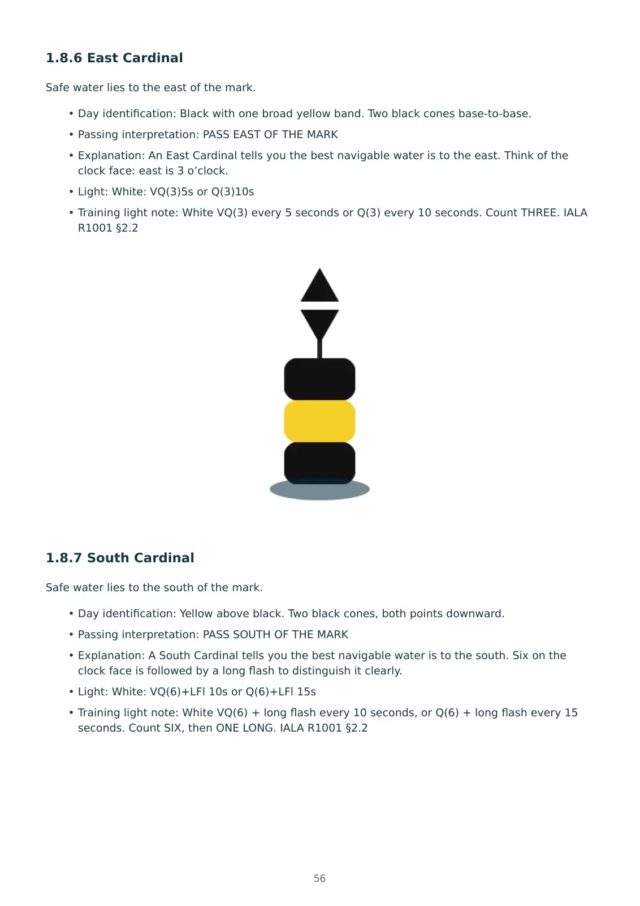
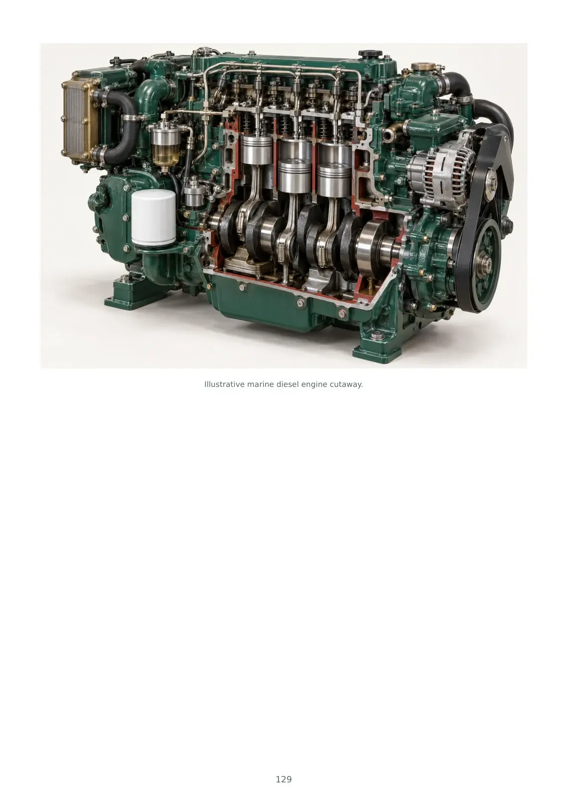

Practise—and understand the answers
The handbook includes Helmlore practice questions with the answers and explanations supplied. Test your knowledge, check your reasoning and revisit topics as part of your training or exam preparation.
Build the knowledge behind a well-prepared passage.
A practical coastal boating reference for UK leisure boat owners and people working towards becoming a skipper. Clear explanations, visual learning and reusable records for the boat you own—or the one you hope to command.
£19.95 including VAT · One-off purchase · Digital download
Checkout and file delivery through Payhip. No physical book supplied.
Engine illustration from the customer edition.
Explore three full-size previews ↓
Use the handbook to work through a subject, revisit an unfamiliar system or understand the reasoning behind a check. Then make the printable records your own, using your vessel’s equipment and manuals.
The handbook includes Helmlore practice questions with the answers and explanations supplied. Test your knowledge, check your reasoning and revisit topics as part of your training or exam preparation.
Cockpit quick-reference cards, warning boxes, pro-tips and real-world pitfalls make the material easier to revisit.
Print working pages for trips, preparation and maintenance. Complete boat-specific details before you need them.
Practice questions, answers and explanations included. You receive both the questions and their answers in the download, so you can revise offline and understand the reasoning—not just check whether you were right.
Lookout, collision avoidance, vessel recognition, navigation lights, day shapes and buoyage.
Preparation, hazards, crew awareness and the knowledge behind emergency readiness.
Tidal depth, clearance, timing and the difference between water height and water movement.
Loading, watertight integrity and the systems that support a well-prepared vessel.
Heading and track, bearing references, variation and deviation.
Position, plotting, dead reckoning, estimated positions and independent cross-checks.
Berth-to-berth preparation, alternatives, endurance, monitoring and useful records.
Daily checks, fuel, cooling, lubrication and an organised approach to fault finding.
Also included: a practical skills supplement covering ropework, handling, berthing and anchoring, practice questions with answers and explanations, a terminology reference and source credits.
Eight A4 pages with working records to reprint for your trips.
Emergency prompts and boat-specific preparation sheets, including MAYDAY and PAN PAN material.
A separate checklist for packing, recording and periodic equipment checks.
Printable preparation and record sheets to complete by hand.
Your package includes a combined PDF, individual printable companions, an optional offline HTML reading edition, a start guide and a customer thank-you note. The worksheets also appear at the back of the handbook; the grab-bag sheet also appears in the emergency-card pack. These are convenient separate copies, not extra unique content.
These are pages from the actual October 2026 customer edition. Select a page to open a larger image. Your paid download contains the complete files.



Created by Clifton Taylor trading as Helmlore, this is independent recreational learning and reference material. It supports study and preparation alongside practical instruction and experience.
It does not award an RYA, MCA, USCG or ICC qualification, include tutor support, or replace current charts, forecasts, local requirements, vessel manuals or recognised training.
This edition focuses on coastal boating and the International COLREG framework. CEVNI and US Inland Rules are outside its scope.
£19.95 including VAT
The 262-page handbook, printable logbook, emergency cards,
grab-bag checklist and eleven worksheets.
One-off purchase · Personal-use digital download · Checkout through Payhip
Yes. Download the PDFs and open them in a PDF reader. The optional HTML edition can be opened in a compatible web browser; local HTML handling varies on mobile devices, so the PDF is the simplest starting point.
Yes, for personal use. Use the separate companion PDFs and select A4 / actual size. Keep an untouched blank copy and print fresh working pages when needed.
No. This edition supplies printable sheets to complete by hand.
Once downloaded, the PDFs can be read offline. External websites and reference links require an internet connection.
Yes. The handbook’s practice questions include their answers and explanations. Use them to check understanding, identify gaps and revise alongside your training, including when preparing for an exam. These are Helmlore’s own learning questions, not an official RYA, MCA or ICC exam question bank. The handbook does not reproduce every question from the separate online platform or guarantee coverage of a particular exam syllabus or an exam pass.
No. This is independent recreational learning and reference material. It does not award an official qualification or replace practical training, assessment or applicable licensing requirements.
No. This coastal handbook edition excludes CEVNI and US Inland Rules. Helmlore’s separate online inland-waterway learning pathway is not part of this paid handbook edition.
No. This purchase is a digital download. No printed book is posted to you.
Seller: Clifton Taylor trading as Helmlore. For product support, email Helmlore.com@gmail.com and include your order reference. Avoid sending payment-card details.